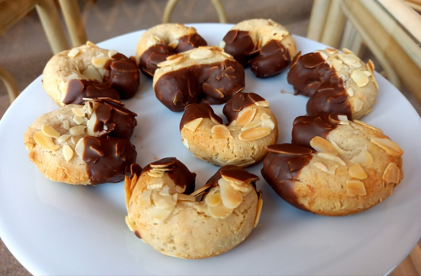

Almond Marzipan Cookies
Ingredients:
-
1 Cup of Ground Almonds
-
1 Cup of Powdered Sugar
-
1/2 tsp of Cinnamon
-
7oz of Raw Marzipan Paste
-
3 tbsp of Almond Milk
-
1 Cup of Slivered Almonds
-
1 tsp of Coconut Oil
-
Any Chocolate

Method:
-
Whisk together the ground almonds, powdered sugar and cinnamon in a bowl.
-
Cut up the raw marzipan into the bowl and then add the almond milk. Knead everything together to make dough.
-
Roll the dough into a ball and wrap in cling film. Chill in the fridge for 30 minutes to an hour.
-
After taking out the dough, preheat the oven and line a baking tray with baking paper.
-
Cut the dough into 4 sections. Roll out all of these section into long sausages and then cut these up into equal sections.
-
Form these sections into crescent shapes and roll each one in the slivered almonds.
-
Lay all of the crescents on the baking tray and bake for 15-20 minutes, depending on the size.
-
Once baked, let them cool fully and melt the chocolate with the coconut oil in a bowl.
-
Dip the ends of the almond crescents into the chocolate and place on a cooling wrack after each one is finished.
-
Let the chocolate harden or at least stop dripping before handling.